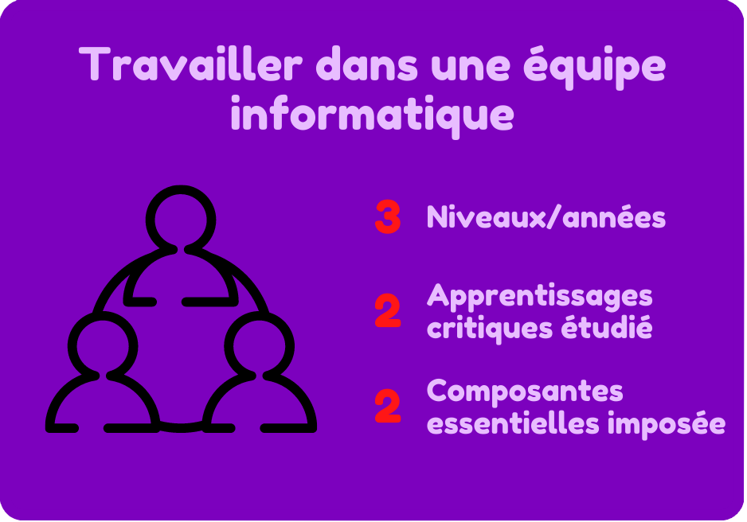
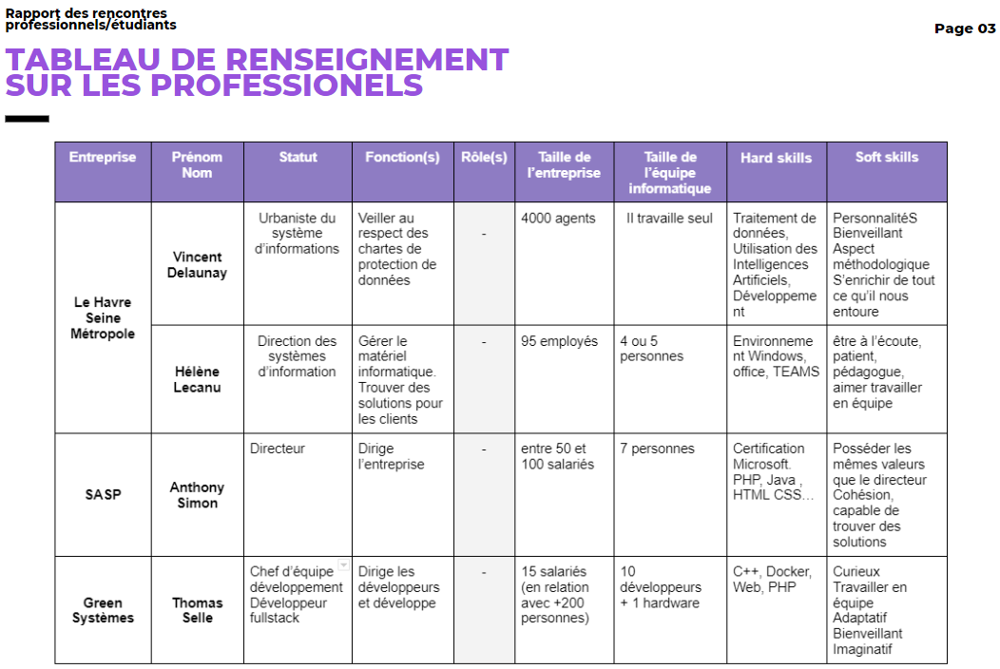

PORTFOLIO
Lemarchand Lucas B2
2021/2024
Lemarchand Lucas B2
2021/2024
Cette compétence se nomme : Acquérir, développer et exploiter les aptitudes nécessaires pour travailler efficacement dans une équipe informatique. Elle s'étend sur 3 années et est la compétence numéro 6 du BUT Informatique.
toutes les composantes sous différents niveaux de maitrise (acquis/en cours/non acquis)
Pour ce qui est d’attribuer et d’identifier un statut ou une fonction nous le faisons depuis toujours. A chaque travail en groupe nous passons par cette étape obligatoire, de plus, nous avons appris lors de nos cours de nos communications les différents rôles attribuables.
Cependant, c’est durant la SAE 2.06 que nous avons pu mettre en pratique ses connaissances. La SAE 2.06 était composée de 2 parties, la première où nous travaillons en groupe et où nous nous sommes donné statuts, fonctions et rôles. Mais c’est la seconde partie qui va ici nous intéresser, dans celle-ci nous devions mener une réflexion individuelle sur les acquis de la première partie. La première question consistait à expliquer notre organisation d’équipe en identifiant et expliquant nos choix en rapport avec ses statuts, fonctions et rôles. (image tableau des rôles)
"Tableau utilisé lors de la réfléxion personnels de la SAE 2.06"
Je pense maîtriser partiellement cet apprentissage critique et ma note à ce travail le prouve. Selon moi je sais identifier ces différents attributs, cependant je ne les explique et justifie pas assez bien pour maîtriser l’AC totalement, il me manque un peu d’entraînement et de pratique ce qui ne devrait pas manquer avec toutes les différentes SAE encore à venir.

"Notes obtenues lors de la SAE 2.06"
Durant le mois de Mai 2022 était organisée une rencontre avec des professionnels, chacun d’entre eux venait d’un milieu différent de l’informatique et nous pouvions leurs poser tout sorte de question. Nous pouvions récolter toute sortes d’informations, comme les « Hard skill » et les « Soft skill » permettant de savoir les requis de chaque milieu. A l’issue de cet rencontre nous devions produire un rapport qui devait contenir un tableau où étaient trié les professionnels avec leurs informations.
"Page du rapport de la rencontre avec les professionnels/étudiants"
C’est donc comme ça que j’ai pu identifier les aptitudes requissent en fonction des métiers de l’informatique, je maîtrise donc cet apprentissage critique.
Durant nos cours de communications nous avons pu apprendre 8 aptitudes communes à tout travail de groupe, je vais donc les voir une par une et mener un réflexion sur l’acquisition de celles-ci.
- Être capable d’écouter autrui :
Durant toutes nos SAE j’ai souvent été amené à être à l’écoute d’autrui pour mener à bien un projet, comme par
exemple dans la SAE 1.05 où tout notre rendu était basé sur
feedback de la réunion de notre Chef avec les clients. J’estime donc maîtriser cette aptitude.
- Produire et solliciter des feedbacks :
Cette aptitude est vraiment importante pour une communication optimale, comme par exemple quand nous devons
produire une charte graphique en équipe. Ou alors comme dans SAE 2.06
où nous devions nous attribuer des rôles, statuts et fonctions en accord avec chacun , ce qui oblige à donner
et demander des feedback.
- Maîtriser ses émotions :
En effet c’est primordiale pour garder une ambiance seine, malgré que je sois quelqu’un qui n’est pas très
patient, je ne me suis jamais emporté lors de tous nos projet. Je pense donc maîtriser cette aptitude.
- Tenir compte des informations nouvelles :
Il est important de toujours se tenir à jour sur le travail à rendre. Lors de la première partie de la
SAE 2.06 j’avais organisé le budget du projet en fonction
d’une buvette payante. Cependant après la communication avec nos professeur, il nous a été dit que c’était
une très mauvaise idée, j’ai dû donc prendre compte de cette nouvelle pour refaire toute l’économie.
J’estime alors maîtriser cette aptitude
- Être capable de s’adapter :
Les conditions de réalisation d’un projet en équipe sont toujours différente, c’est donc très important très
important de s’adapter. Je pense maîtriser cette aptitude car lors des SAE je me suis retrouver en groupe
avec, des connaissances (ex : SAE 1.02), des inconnus
(ex : SAE 2.05) et des personnes ayant des difficultés en
pour parler en français (ex : SAE 1.05) et cela n’a jamais
été un problème.
- Être capable d’informer autrui rapidement et clairement :
La circulation de l’information est primordiale pour le bon déroulement d’un projet. Durant tous mes travaux
de groupe, la communication a été bonne, nous communiquions sur l’outil Discord (que j’ai présenté lors de la
phase 2 de la SAE 2.06) ce qui nous permettait de communiquer
vite, à n’importe quel moment et pour transmettre n’importe quel type d’information. Je pense donc posséder
cette aptitude.
- Être capable de se soumettre à certaines contraintes :
Tout projet est toujours soumis à des contraintes de réalisation, c’est principalement ce que nous avons eu
lors de la SAE 1.05, nous devions nous soumettre aux
contraintes du Client ainsi qu’à l’utilisateur. Notre projet s’est bien déroulé et nous avons fini à temps,
j’estime donc maîtriser cette aptitude.
- Connaître les vases de la gestion de projet :
Afin qu’un projet se déroule comme on le souhaite, il est toujours important de l’organiser. C’est exactement
ce que nous devions faire lors de la SAE 2.05, durant celle-ci
nous avons utilisé divers outils de gestion de projet afin d’en organiser un. Le résultat c’est porté concluant,
je pense dons avoir cette aptitude.
Etant donné que j’estime posséder toute les aptitudes nécessaires pour travailler en groupe, j’affirme maitriser cette apprentissage critique.
Durant toutes nos SAE nous avons respecté les contraintes règlement que ce soit sur les noms de fichier, c’est-à-dire en précisant notre groupe, puis le sujet et enfin notre nom/prénom. Ou alorsles mail transmis aux enseignant ou nous avons toujours utilisé la structure demandé, donc avec une salutation, une formule de politesse et les précisions sur notre identité.
Je pense respecter à moitié cet enseignement critique car je ne serais expliquer ce nous avons fait en rapport avec les contraintes législatives.
Précédemment, je vous ai prouvé lors de l’apprentissage critique 4 que j’étais capable d’informer autrui rapidement et clairement. De plus lors de la phase 2 de la SAE 2.06 j’ai pu présenter plusieurs outils de gestion collaborative dont Discord permettant de communiquer, de s’appeler, d’échanger des fichiers, d’enregistrer les informations importantes et enfin d’être joignable n’importe où car cet outils est disponible sur toutes les plateformes (ordinateur, téléphone etc…). Les communications avec mes précédentes équipes ont donc été efficaces et collaboratives.